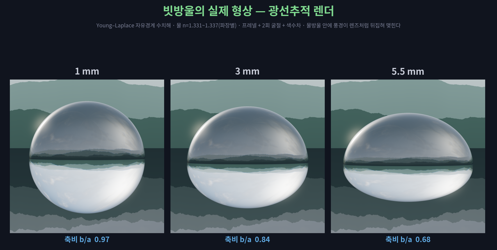
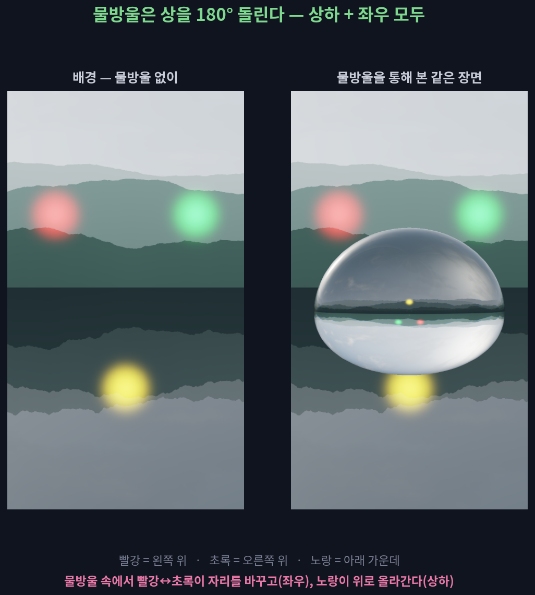
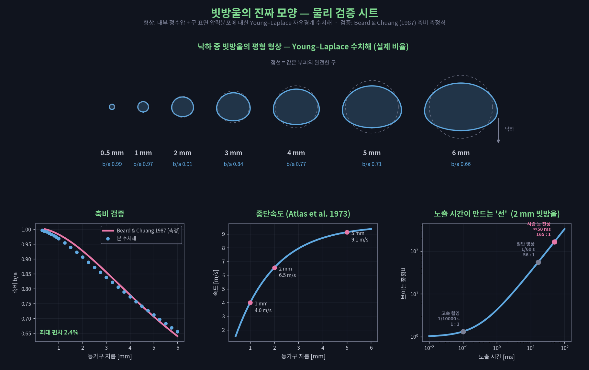

하늘에서 떨어지는 빗방울은 어떤 모양일까?
비를 그려 보라고 하면 사람들은 두 가지를 그립니다. 길쭉한 사선, 그리고 위가 뾰족한 물방울. 둘 다 실제 빗방울의 모습이 아닙니다. 사선은 잔상이고, 눈물방울은 앞뒤까지 뒤집혀 있습니다.
소리를 켜고 보세요. 약 1분입니다.
영상에서 확인할 세 가지
우리가 그리는 비는
두 번 틀렸습니다
눈이 빛을 모으는 20분의 1초 동안 빗방울은 30 cm를 지나갑니다. 늘어난 건 시간입니다.
표면장력과 공기 압력의 균형이 만드는 실제 형상입니다. 눈물방울과는 위아래가 반대입니다.
바닥이 낙하산처럼 부풀다 쪼개지기 때문에 자연의 빗방울은 5~6 mm를 넘지 못합니다.
사선의 정체 — 늘어난 것은 시간
지름 2 mm 빗방울은 초속 6.5 m로 떨어집니다. 카메라도 눈도 빛을 일정 시간 모아서 보기 때문에, 빠른 것은 선으로 남습니다.
| 보는 방법 | 노출 시간 | 맺히는 길이 | 보이는 종횡비 |
|---|---|---|---|
| 고속 촬영 | 1/10000초 | 2.7 mm | 1.3 : 1 |
| 일반 영상 | 1/60초 | 11 cm | 56 : 1 |
| 사람 눈의 잔상 | 약 1/20초 | 33 cm | 165 : 1 |
길이 = 지름 + 속도 × 노출 시간. 고속 촬영이 나오기 전까지 인류는 빗방울의 모양을 눈으로 확인할 방법이 없었습니다.
실제 형상 — 방정식을 풀어서 그렸습니다
종단속도로 떨어지는 물방울은 가속하지 않으므로, 내부 정수압과 외부 공기 압력이 표면장력과 균형을 이룹니다. 이 Young–Laplace 방정식을 수치적으로 풀면 아래 모양이 나옵니다.

| 지름 | 종단속도 | 축비(세로÷가로) 계산 | 측정식(Beard–Chuang) | 편차 |
|---|---|---|---|---|
| 1 mm | 4.0 m/s | 0.97 | 0.98 | −1.4% |
| 3 mm | 8.0 m/s | 0.84 | 0.86 | −2.0% |
| 5 mm | 9.1 m/s | 0.71 | 0.71 | +0.8% |
눈물방울은 앞뒤가 뒤집혀 있습니다. 「빠른 건 앞이 뾰족하다」는 직관대로라면 진행 방향인 아래가 뾰족해야 하는데, 우리는 위를 뾰족하게 그립니다. 실제 빗방울은 정반대로 위가 둥글고 아래가 눌립니다. 물방울은 유체라 유선형을 유지할 수 없고, 표면장력이 늘 구로 되돌리려 하기 때문입니다.
한계와 떨림
지름이 5 mm를 넘으면 바닥이 파이며 낙하산처럼 부풀다 터집니다. 그리고 그 아래 크기에서도 모양은 고정이 아닙니다.
f = (1/2π) √( n(n−1)(n+2) σ / ρa³ )
레일리(1879)의 액적 진동식 · n = 2, 지름 4 mm → 초당 43회 진동
어떻게 확인했나
영상과 그림, 소리까지 전부 계산으로 만들었습니다.
- 형상 — Young–Laplace 자유경계 문제를 호길이 매개화 경계값 문제로 수치해석. 축비를 Beard & Chuang(1987) 측정식과 대조해 최대 편차 2.4%를 확인했습니다.
- 렌더 — 회전체 부호거리장을 스피어 트레이싱. 프레넬 분기와 2회 굴절, 파장별 굴절률로 색수차까지 재현했습니다.
- 굴절상 검증 — 배경에 위치 표지 세 개를 심어, 물방울 속에서 상이 상하·좌우 모두 뒤집히는 것을 확인했습니다.
- 소리 — 빗소리는 물방울이 수면에 가둔 공기 방울의 공명(f ≈ 3.26/d kHz·mm)을 크기 분포에 따라 초당 900개 쌓아 합성했습니다.


참고: Beard & Chuang (1987) J. Atmos. Sci. 44, 1509 · Atlas, Srivastava & Sekhon (1973) Rev. Geophys. 11, 1 · Pruppacher & Pitter (1971) J. Atmos. Sci. 28, 86 · Rayleigh (1879) Proc. R. Soc. Lond. 29, 71